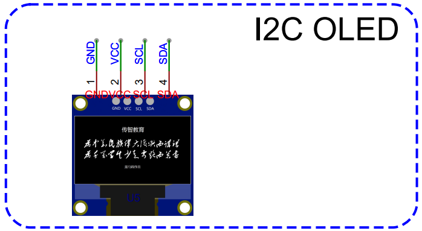
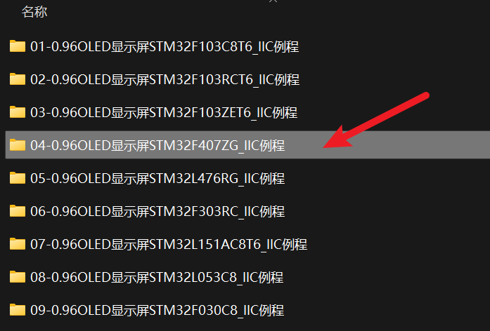

<!DOCTYPE lake>
<h2 data-lake-id="xwgcS" id="xwgcS"><span data-lake-id="ua6cb577f" id="ua6cb577f">学习目标</span></h2><ol list="u8205c022"><li data-lake-id="ue496d701" fid="u01ef5095" id="ue496d701"><span data-lake-id="u43b009b5" id="u43b009b5">掌握移植方法</span></li><li data-lake-id="u274e8f1b" fid="u01ef5095" id="u274e8f1b"><span data-lake-id="u6a4c145d" id="u6a4c145d">掌握解决移植失败的思路</span></li><li data-lake-id="u1d62a6e0" fid="u01ef5095" id="u1d62a6e0"><span data-lake-id="u253db47b" id="u253db47b">掌握调试方式</span></li></ol><h2 data-lake-id="wjsZm" id="wjsZm"><span data-lake-id="ue9961152" id="ue9961152">学习内容</span></h2><h3 data-lake-id="Ly5m4" id="Ly5m4"><span data-lake-id="u616b866b" id="u616b866b">需求</span></h3><p data-lake-id="ub63e7e8f" id="ub63e7e8f"></p><p data-lake-id="ubd7443e5" id="ubd7443e5"><br/></p><h3 data-lake-id="rpug8" id="rpug8"><span data-lake-id="ud6db96a7" id="ud6db96a7">官方测试示例</span></h3><h4 data-lake-id="gaj1K" id="gaj1K"><span data-lake-id="u3a54831c" id="u3a54831c">选择对应的平台</span></h4><p data-lake-id="u12cd80db" id="u12cd80db"><span data-lake-id="uaa183c7c" id="uaa183c7c">测试示例中，找到芯片对应平台，我们选择的是</span><code data-lake-id="u5d132bcd" id="u5d132bcd"><span data-lake-id="u63da1401" id="u63da1401">STM32F407</span></code></p><p data-lake-id="uc50513e9" id="uc50513e9"></p><h4 data-lake-id="I2mrb" id="I2mrb"><span data-lake-id="uf452fa86" id="uf452fa86">修改例程</span></h4><p data-lake-id="u496179cd" id="u496179cd"><span data-lake-id="u5e4de502" id="u5e4de502">已知错误修改：</span></p><span class="yuque-card-unsupported">[codeblock]</span><p data-lake-id="u9cf7fca1" id="u9cf7fca1"><span data-lake-id="ua1f3d4ac" id="ua1f3d4ac">引脚定义修改：</span></p><span class="yuque-card-unsupported">[codeblock]</span><p data-lake-id="uc06da6dd" id="uc06da6dd"><span data-lake-id="u16cc2ec2" id="u16cc2ec2">初始化逻辑修改:</span></p><span class="yuque-card-unsupported">[codeblock]</span><h4 data-lake-id="xucF4" id="xucF4"><span data-lake-id="u3a8b2749" id="u3a8b2749">烧录</span></h4><p data-lake-id="uc8ef375d" id="uc8ef375d"><span data-lake-id="u9a78e513" id="u9a78e513">修改芯片设置，修改烧录方式为</span><code data-lake-id="u9ef94a19" id="u9ef94a19"><span data-lake-id="u74fb03a3" id="u74fb03a3">DAP Link</span></code><span data-lake-id="u53ffe2cd" id="u53ffe2cd">，烧录到当前GD32F470芯片中</span></p><h4 data-lake-id="COWIC" id="COWIC"><span data-lake-id="uf1051d8d" id="uf1051d8d">测试结果</span></h4><p data-lake-id="ua643b85c" id="ua643b85c"><span data-lake-id="uff9d98bc" id="uff9d98bc">失败。无法工作。</span></p><p data-lake-id="u8becae4f" id="u8becae4f"><span data-lake-id="ub8724855" id="ub8724855">通常碰到这种情况，我们需要进行分析。</span></p><ol list="u0329d263"><li data-lake-id="u90b33205" fid="ua53794c7" id="u90b33205"><span data-lake-id="u2504734e" id="u2504734e">环境问题</span></li><li data-lake-id="u375951a3" fid="ua53794c7" id="u375951a3"><span data-lake-id="u9e550fab" id="u9e550fab">协议问题</span></li></ol><h3 data-lake-id="BBANJ" id="BBANJ"><span data-lake-id="u18d459e8" id="u18d459e8">STM32测试环境</span></h3><p data-lake-id="u375e1c7b" id="u375e1c7b"><span data-lake-id="u774f16fe" id="u774f16fe">采用自己的模板环境。</span></p><h4 data-lake-id="JuPHj" id="JuPHj"><span data-lake-id="uf7c67872" id="uf7c67872">测试代码构建</span></h4><span class="yuque-card-unsupported">[codeblock]</span><p data-lake-id="ub3fde09b" id="ub3fde09b"><span data-lake-id="ub447d1ee" id="ub447d1ee">修改一些API命名，比如delay的api</span></p><h4 data-lake-id="GxKfY" id="GxKfY"><span data-lake-id="u7987f7c2" id="u7987f7c2">驱动移植</span></h4><p data-lake-id="u11550ecb" id="u11550ecb"><span data-lake-id="uf9cb5424" id="uf9cb5424">可以将之前出错的API移植过来。</span></p><span class="yuque-card-unsupported">[codeblock]</span><span class="yuque-card-unsupported">[codeblock]</span><ul list="u62da481a"><li data-lake-id="u45ee60e9" fid="u93f3bbc0" id="u45ee60e9"><span data-lake-id="u3237debd" id="u3237debd">头文件的引入问题。处理</span><code data-lake-id="u20a52290" id="u20a52290"><span data-lake-id="u204eb0dd" id="u204eb0dd">#include "delay.h"</span></code><span data-lake-id="u96dcacda" id="u96dcacda">替换为 </span><code data-lake-id="u36dc7892" id="u36dc7892"><span data-lake-id="u1721856d" id="u1721856d">#include "systick.h"</span></code></li><li data-lake-id="u457cb42d" fid="u93f3bbc0" id="u457cb42d"><span data-lake-id="uffad6001" id="uffad6001">修改delay函数</span></li></ul><span class="yuque-card-unsupported">[codeblock]</span><h4 data-lake-id="ud8vQ" id="ud8vQ"><span data-lake-id="u3f9595b4" id="u3f9595b4">I2C信号处理</span></h4><h5 data-lake-id="Xf59c" id="Xf59c"><span data-lake-id="udb5c687a" id="udb5c687a">start信号</span></h5><span class="yuque-card-unsupported">[codeblock]</span><h5 data-lake-id="Dt7zY" id="Dt7zY"><span data-lake-id="u3206fbb0" id="u3206fbb0">stop信号</span></h5><span class="yuque-card-unsupported">[codeblock]</span><h5 data-lake-id="iZntE" id="iZntE"><span data-lake-id="ue80b79c4" id="ue80b79c4">wait ack信号</span></h5><span class="yuque-card-unsupported">[codeblock]</span><p data-lake-id="u97234473" id="u97234473"><span data-lake-id="u5c233a79" id="u5c233a79">信号处理过程中，需要将输出改为输入，sda线需要由主从双方进行交替使用。</span></p><h5 data-lake-id="i1CSx" id="i1CSx"><span data-lake-id="u39f44aa3" id="u39f44aa3">头文件封装</span></h5><span class="yuque-card-unsupported">[codeblock]</span><h4 data-lake-id="NnaG2" id="NnaG2"><span data-lake-id="u6594d932" id="u6594d932">完整代码</span></h4><span class="yuque-card-unsupported">[codeblock]</span><span class="yuque-card-unsupported">[codeblock]</span><h3 data-lake-id="zjmyL" id="zjmyL"><span data-lake-id="u0bb1f405" id="u0bb1f405">STM32F4软件I2C封装</span></h3><h4 data-lake-id="Bplfl" id="Bplfl"><span data-lake-id="ua4b133b3" id="ua4b133b3">I2C封装</span></h4><span class="yuque-card-unsupported">[codeblock]</span><span class="yuque-card-unsupported">[codeblock]</span><h4 data-lake-id="QHbC0" id="QHbC0"><span data-lake-id="u3916521e" id="u3916521e">驱动加减法</span></h4><span class="yuque-card-unsupported">[codeblock]</span><span class="yuque-card-unsupported">[codeblock]</span><p data-lake-id="ua9aff1ba" id="ua9aff1ba"><span data-lake-id="u4cfbaeec" id="u4cfbaeec">去掉I2C处理的逻辑，将I2C和驱动分离，原因是，在整个系统中，I2C是总线，会外挂多个设备，不应该将一个设备和I2C绑死。</span></p><h4 data-lake-id="plcF8" id="plcF8"><span data-lake-id="u0b880a27" id="u0b880a27">二维数组</span></h4><span class="yuque-card-unsupported">[codeblock]</span><p data-lake-id="ub1a64958" id="ub1a64958"><span data-lake-id="uff2443c0" id="uff2443c0">二维数组可以理解为一张表，上面的数组对应下面的内容：</span></p><table class="lake-table" data-lake-id="CvZT2" id="CvZT2" margin="true" style="width: 275px" width-mode="contain"><colgroup><col width="55"/><col width="55"/><col width="55"/><col width="55"/><col width="55"/></colgroup><tbody><tr data-lake-id="u8f03b38a" id="u8f03b38a"><td data-lake-id="u7e7ce700" id="u7e7ce700"><p data-lake-id="u1645d3fa" id="u1645d3fa"><span data-lake-id="u8d02dd46" id="u8d02dd46">0</span></p></td><td data-lake-id="ue93cac3e" id="ue93cac3e"><p data-lake-id="uc30e9990" id="uc30e9990"><span data-lake-id="u5058147b" id="u5058147b">1</span></p></td><td data-lake-id="u6062892f" id="u6062892f"><p data-lake-id="u7f24aea0" id="u7f24aea0"><span data-lake-id="u5d8a3f76" id="u5d8a3f76">2</span></p></td><td data-lake-id="ue3486107" id="ue3486107"><p data-lake-id="ub2a00e70" id="ub2a00e70"><span data-lake-id="ub8e3725a" id="ub8e3725a">3</span></p></td><td data-lake-id="u94b7c03c" id="u94b7c03c"><p data-lake-id="u455ffa3c" id="u455ffa3c"><span data-lake-id="u9cbe199b" id="u9cbe199b">4</span></p></td></tr><tr data-lake-id="u580993ff" id="u580993ff"><td data-lake-id="u92f6a07e" id="u92f6a07e"><p data-lake-id="uf5e030a7" id="uf5e030a7"><span data-lake-id="u556dca8a" id="u556dca8a">10</span></p></td><td data-lake-id="u2f19f783" id="u2f19f783"><p data-lake-id="u833a2314" id="u833a2314"><span data-lake-id="u8b178bda" id="u8b178bda">11</span></p></td><td data-lake-id="ud7b663d1" id="ud7b663d1"><p data-lake-id="u7aa47ee3" id="u7aa47ee3"><span data-lake-id="u4aa78a42" id="u4aa78a42">12</span></p></td><td data-lake-id="u20833938" id="u20833938"><p data-lake-id="u8b30858d" id="u8b30858d"><span data-lake-id="udc0d4c73" id="udc0d4c73">13</span></p></td><td data-lake-id="u94004326" id="u94004326"><p data-lake-id="u38b7dd45" id="u38b7dd45"><span data-lake-id="u64e64d1f" id="u64e64d1f">14</span></p></td></tr><tr data-lake-id="u6e8a77c4" id="u6e8a77c4"><td data-lake-id="u5336e139" id="u5336e139"><p data-lake-id="u05b7e2d8" id="u05b7e2d8"><span data-lake-id="u266ec1e8" id="u266ec1e8">20</span></p></td><td data-lake-id="u21ee4fc7" id="u21ee4fc7"><p data-lake-id="u6270ed79" id="u6270ed79"><span data-lake-id="u749ee576" id="u749ee576">21</span></p></td><td data-lake-id="u44914a17" id="u44914a17"><p data-lake-id="u4d529c86" id="u4d529c86"><span data-lake-id="u3df5ed42" id="u3df5ed42">22</span></p></td><td data-lake-id="uc697cd75" id="uc697cd75"><p data-lake-id="uc2892160" id="uc2892160"><span data-lake-id="uf943a04b" id="uf943a04b">23</span></p></td><td data-lake-id="u9504811a" id="u9504811a"><p data-lake-id="u6cdd4302" id="u6cdd4302"><span data-lake-id="uc66cef1f" id="uc66cef1f">24</span></p></td></tr><tr data-lake-id="u9a430ed5" id="u9a430ed5"><td data-lake-id="ubb0b9412" id="ubb0b9412"><p data-lake-id="u3fee0855" id="u3fee0855"><span data-lake-id="u24be264f" id="u24be264f">30</span></p></td><td data-lake-id="ud65a4bea" id="ud65a4bea"><p data-lake-id="u4726112f" id="u4726112f"><span data-lake-id="u5190e46a" id="u5190e46a">31</span></p></td><td data-lake-id="udef694ff" id="udef694ff"><p data-lake-id="u394b875b" id="u394b875b"><span data-lake-id="u855b79ec" id="u855b79ec">32</span></p></td><td data-lake-id="u4bcd0db1" id="u4bcd0db1"><p data-lake-id="u89183d9b" id="u89183d9b"><span data-lake-id="ua9821b8c" id="ua9821b8c">33</span></p></td><td data-lake-id="u086a3df9" id="u086a3df9"><p data-lake-id="u920b4eb1" id="u920b4eb1"><span data-lake-id="u2d06b9d7" id="u2d06b9d7">34</span></p></td></tr></tbody></table><p data-lake-id="u2e39ea8e" id="u2e39ea8e"><span data-lake-id="ua63435cf" id="ua63435cf">在内存中的存储也是连续的，存储方式如下：</span></p><table class="lake-table" data-lake-id="TMYbZ" id="TMYbZ" margin="true" style="width: 800px" width-mode="contain"><colgroup><col width="40"/><col width="40"/><col width="40"/><col width="40"/><col width="40"/><col width="40"/><col width="40"/><col width="40"/><col width="40"/><col width="40"/><col width="40"/><col width="40"/><col width="40"/><col width="40"/><col width="40"/><col width="40"/><col width="40"/><col width="40"/><col width="40"/><col width="40"/></colgroup><tbody><tr data-lake-id="ub26ef9eb" id="ub26ef9eb"><td data-lake-id="udd264438" id="udd264438"><p data-lake-id="ubfc1a3d3" id="ubfc1a3d3"><span data-lake-id="u9516ad2c" id="u9516ad2c">0</span></p></td><td data-lake-id="ue7d2513a" id="ue7d2513a"><p data-lake-id="u3312f1f5" id="u3312f1f5"><span data-lake-id="u539df3da" id="u539df3da">1</span></p></td><td data-lake-id="uedae4a55" id="uedae4a55"><p data-lake-id="ue10378c3" id="ue10378c3"><span data-lake-id="ua3c363d7" id="ua3c363d7">2</span></p></td><td data-lake-id="u1ad69a13" id="u1ad69a13"><p data-lake-id="u269ecb22" id="u269ecb22"><span data-lake-id="u98f93654" id="u98f93654">3</span></p></td><td data-lake-id="u0ebb46d3" id="u0ebb46d3"><p data-lake-id="u0be63cc7" id="u0be63cc7"><span data-lake-id="u2a4841e8" id="u2a4841e8">4</span></p></td><td data-lake-id="uaf425da6" id="uaf425da6"><p data-lake-id="u093e4125" id="u093e4125"><span data-lake-id="ud96fa6d3" id="ud96fa6d3">10</span></p></td><td data-lake-id="ue6335cc7" id="ue6335cc7"><p data-lake-id="uc485e11b" id="uc485e11b"><span data-lake-id="udacfb8c8" id="udacfb8c8">11</span></p></td><td data-lake-id="u3a8a1564" id="u3a8a1564"><p data-lake-id="uc26cdaf0" id="uc26cdaf0"><span data-lake-id="u96c57ee5" id="u96c57ee5">12</span></p></td><td data-lake-id="ud2f01dee" id="ud2f01dee"><p data-lake-id="u69478e28" id="u69478e28"><span data-lake-id="u230f2793" id="u230f2793">13</span></p></td><td data-lake-id="u195871b6" id="u195871b6"><p data-lake-id="udea43963" id="udea43963"><span data-lake-id="ud1c6c880" id="ud1c6c880">14</span></p></td><td data-lake-id="u1e84b29b" id="u1e84b29b"><p data-lake-id="u88fa0173" id="u88fa0173"><span data-lake-id="u78432eca" id="u78432eca">20</span></p></td><td data-lake-id="uabe1cb99" id="uabe1cb99"><p data-lake-id="udf53ab86" id="udf53ab86"><span data-lake-id="ucf018be7" id="ucf018be7">21</span></p></td><td data-lake-id="u1a11693d" id="u1a11693d"><p data-lake-id="u385190ef" id="u385190ef"><span data-lake-id="uf63dfb00" id="uf63dfb00">22</span></p></td><td data-lake-id="u99f1d288" id="u99f1d288"><p data-lake-id="ueffc149a" id="ueffc149a"><span data-lake-id="ude846764" id="ude846764">23</span></p></td><td data-lake-id="uae618faf" id="uae618faf"><p data-lake-id="u62e18fe7" id="u62e18fe7"><span data-lake-id="u4212904a" id="u4212904a">24</span></p></td><td data-lake-id="ub3fe2b88" id="ub3fe2b88"><p data-lake-id="u8648a1dd" id="u8648a1dd"><span data-lake-id="u3cb582bd" id="u3cb582bd">30</span></p></td><td data-lake-id="u0747f9b1" id="u0747f9b1"><p data-lake-id="u5e914bfc" id="u5e914bfc"><span data-lake-id="ud938c29e" id="ud938c29e">31</span></p></td><td data-lake-id="ubd0a2177" id="ubd0a2177"><p data-lake-id="u3caf852d" id="u3caf852d"><span data-lake-id="ufb9d6fe3" id="ufb9d6fe3">32</span></p></td><td data-lake-id="uf34b8d93" id="uf34b8d93"><p data-lake-id="u457f946d" id="u457f946d"><span data-lake-id="u1578f7bd" id="u1578f7bd">33</span></p></td><td data-lake-id="uc82e1cc8" id="uc82e1cc8"><p data-lake-id="u6d81987e" id="u6d81987e"><span data-lake-id="u3a278032" id="u3a278032">34</span></p></td></tr></tbody></table><p data-lake-id="u16177eb9" id="u16177eb9"><span data-lake-id="u7b324c92" id="u7b324c92">内存中是一行一行的进行存储的。</span></p><p data-lake-id="u19bb196e" id="u19bb196e"><span data-lake-id="ud804f74c" id="ud804f74c">那么如果我想获得一个第1行第2列的值，可以如下方式获取：</span></p><span class="yuque-card-unsupported">[codeblock]</span><p data-lake-id="u998efe52" id="u998efe52"><span data-lake-id="u2e725918" id="u2e725918">如果想获得地址，也是一样的：</span></p><span class="yuque-card-unsupported">[codeblock]</span><p data-lake-id="u2d757a92" id="u2d757a92"><span data-lake-id="uffdc107c" id="uffdc107c">如果我把第1行第2列这个指针给到你，我们该如何它对应的取值：</span></p><span class="yuque-card-unsupported">[codeblock]</span><p data-lake-id="u53b5bfe9" id="u53b5bfe9"><span data-lake-id="u3410956d" id="u3410956d">如果我把第1行第2列这个指针给到你，我们该如何它下一行这个位置的值：</span></p><span class="yuque-card-unsupported">[codeblock]</span><h4 data-lake-id="ECMPm" id="ECMPm"><span data-lake-id="u7f7d57f8" id="u7f7d57f8">功能扩展</span></h4><span class="yuque-card-unsupported">[codeblock]</span><p data-lake-id="ucc69a866" id="ucc69a866"><span data-lake-id="u033f3f61" id="u033f3f61">由于OLED屏幕内部维护了一个二维数组，二维数组又是按照列去发送数据的，因此我们对数据发送逻辑进行修改操作。</span></p><h4 data-lake-id="BLVct" id="BLVct"><span data-lake-id="u7ef79fb2" id="u7ef79fb2">测试</span></h4><span class="yuque-card-unsupported">[codeblock]</span><p data-lake-id="ufd198edc" id="ufd198edc"><span data-lake-id="ufd96dbcb" id="ufd96dbcb">​</span><br/></p><h3 data-lake-id="Zs2Ak" id="Zs2Ak"><span data-lake-id="u33535cf0" id="u33535cf0">完整代码</span></h3><h4 data-lake-id="ZIE80" id="ZIE80"><span data-lake-id="u8d97785b" id="u8d97785b">I2C驱动代码</span></h4><span class="yuque-card-unsupported">[codeblock]</span><h5 data-lake-id="sMNdS" id="sMNdS"><span data-lake-id="u3db22b7e" id="u3db22b7e">STM32F4</span></h5><span class="yuque-card-unsupported">[codeblock]</span><h5 data-lake-id="xDWbt" id="xDWbt"><span data-lake-id="u702b2bc5" id="u702b2bc5">GD32F4</span></h5><span class="yuque-card-unsupported">[codeblock]</span><p data-lake-id="u5b663e4c" id="u5b663e4c"><br/></p><h2 data-lake-id="HSRZp" id="HSRZp"><span data-lake-id="u21137098" id="u21137098">练习题</span></h2><ol list="u5c8eca4b"><li data-lake-id="u4d11fe6c" fid="u557cadf8" id="u4d11fe6c"><span data-lake-id="u833393b3" id="u833393b3">实现软件i2c显示</span></li><li data-lake-id="u2b39b975" fid="u557cadf8" id="u2b39b975"><span data-lake-id="u1df153b2" id="u1df153b2">实现硬件i2c显示</span></li></ol>